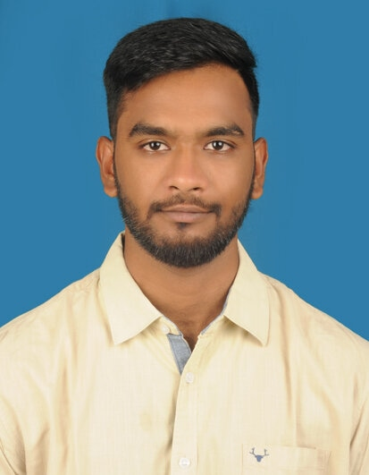

Sai Sujith Rathamsetty
Objective:
Passionate Computer science engineer with
lot of enthuism is learning new skills and
developing world class software
 Education:
Education:
- Schooling is from Naagrajuna High School in India with 92.1%
- Inter is in the field of M.P.C from Sri Chaitanya Junior kalasala with 91.3%
- Btech graduate from Vignan Institute of Tecnhology and Sciences in Computer
science with 75.3%
Experience:
- Cognizant Tecnhology and Solutions: Process Specialist Data
- Nov 2022 to May 2023
- Acting Team lead to manage 20 people in maintaining Quality and reaching
SLA`s on time.
- Implemented ideas which reduced resource wastage and improved the productivity
by 9%.
- Maintaining existing Dashboards to analyse and make business decisions.
- Infosys Pvt Ltd: Process Excecutive (MIS)
- Nov 2018 to June 2022
- MIS excecutive for the project with over 200 employees.
- Maintained data on the employees like productivity, quality.
- Created Dashboards to help manageral level understand the progress of
project.
- Accenture Solutions Pvt Ltd: Senior Process Excecutive
- Nov 2016 to July 2018
- Acted as a mentor for new employees in order to help them understand the
policies and metrics.
- Undertook many pilot projects which later on came effective on the production floor.
 Skills:
Skills:
- C
- Java
- Python
- HTML
- Power BI
- Machine Learning
To know more about me click here!!
To know my contact details click here!!